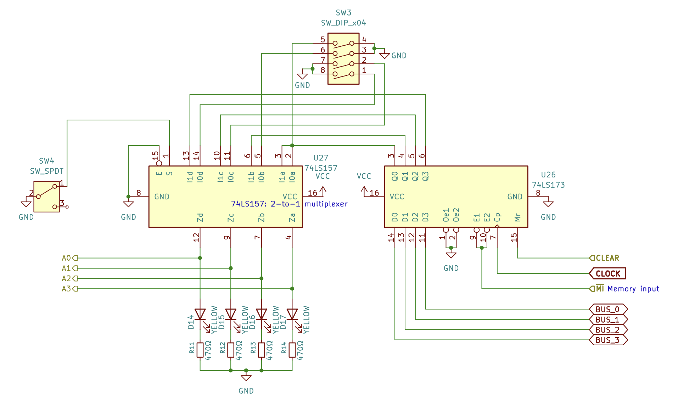
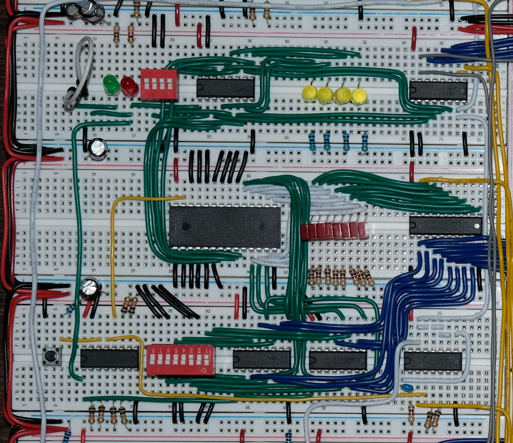
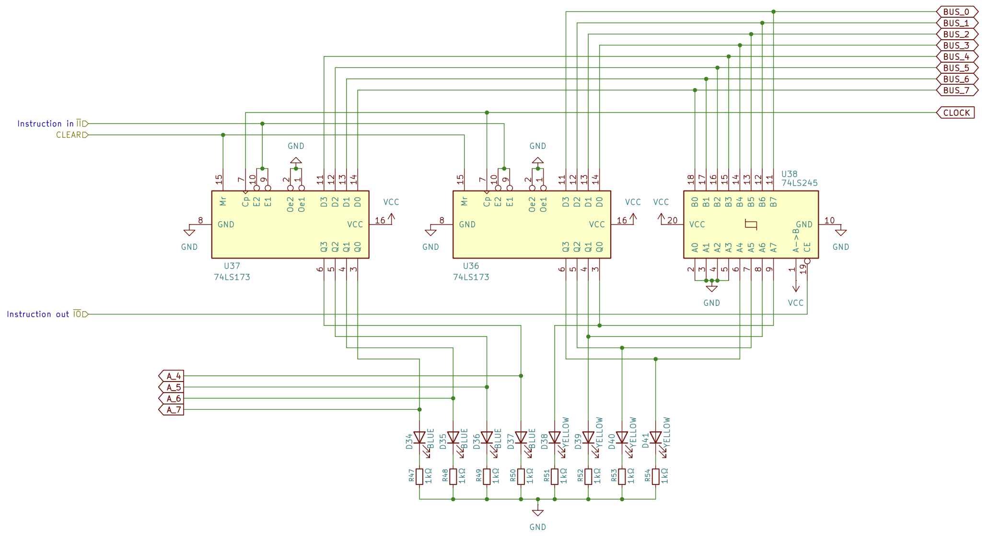
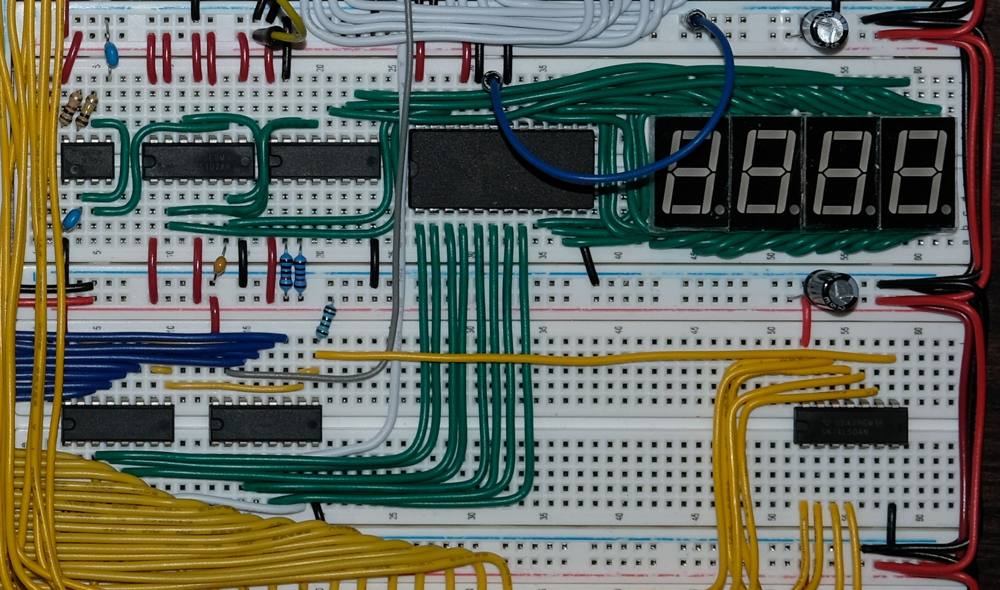

An 8-bit CPU based on the SAP-1 (Simple-As-Possible) architecture built on breadboards as an exercise to learn about computer architecture. This project is based on Ben Eater's 8-bit computer and modifications have been made based on online resouces.
Multivibrator circuits are used to generate two-state signals. Three configurations are used: astable, monostable, and bistable.
Arithmetic logic unit (ALU) is a combinational circuit for performing arithmetic and logical or bitwise operations on binary numbers.
The SAP-1 computer contains a simple ALU, consisting of logic gates and flip-flops, capable of binary addition and subtraction on data in A-register (accumulator) and B-register.

Connecting multiple D flip-flops to a common clock creates a register that can hold data, memory addresses, or instructions. In this design, pairs of 74LS173 (4-bit D-type registers) are used. Although the 74LS173 has built-in three-state outputs, the output control pins are tied to the ground so its outputs remain active, allowing status LEDs to display the data stored in the register. To control the output onto the bus, a 74LS245 (octal bus transceivers), which contains three-state outputs, is added. While the 74LS245 features bi-directional transceivers, it is wired unidirectionally to gate stored data onto the bus while the 74LS173 inputs read from the bus directly.
Inside the ALU, the 8-bit numbers in A-register and B-register are added in the sum register. To perform addition and subtraction, two 74LS283 (4-bit binary full adders) are cascaded together, taking data from registers A and B.
Flag register...

Program counter (also known as instruction pointer) is a register that holds the memory address of the next instruction to be executed.
A binary counter, whose value increments with each clock pulse, can be created by cascading multiple flip-flops (J-K or D-types), connecting the output of each flip-flop to the clock input of the next stage. By doing so, each stage flips at half the frequency of the previous stage, creating a counting sequence in binary.
Using the 74LS161 (4-bit binary counter), a program counter that increments once per instruction can be created. At the start of the instruction cycle (also known as the fetch–decode–execute cycle), the memory address stored in the program counter is fetched to the memory address register (MAR). Then, the program counter can:
Activating Count Enable (CE) pin of the 74LS161 allows the program counter to increment and advance to the next instruction. Count Enable (CE) is disabled while the instruction is being executed. Conversely, activating Jump (J) pin allows the program counter to take the value from the bus and redirect to a new memory address.

Memory address register (MAR) is a register that holds the memory address of the instruction, which RAM reads to retrieve the instruction or data.
The 74LS157 (2-to-1 multiplexers) is used to switch between program mode and run mode.

Random access memory (RAM) is temporary storage that holds data and program instructions while the CPU is actively running. The CPU has "random access" to the data stored inside the RAM, meaning that the CPU can find any piece of data instantly without reading through data in a specific order as well as write data to any memory address directly. Two main types of RAM are Dynamic RAM (DRAM) and Static RAM (SRAM).
DRAM and SRAM are volatile memories: data is only kept while power is turned on. On the other hand, non-volatile memories, such as flash memory storage, retain stored data even without power. EEPROMs, which are used in the control unit and the output display of this CPU, are an example of non-volatile memory. It stores the opcode and operand of each memory address.
The AS6C66256 (32k x 8 bit CMOS SRAM) is an SRAM chip that is used for this module. It has a memory capacity of 256k bit or 32k bytes.

Instruction register is a register that holds the instruction currently being executed. The lower 74LS173 outputs the least significant 4 bits of data as the operand, while the upper 74LS173 outputs the most significant 4 bits of data as the opcode.
The opcode is fed into the address lines of the 28C16 EEPROMs to execute microcode. As mentioned before, EEPROMs are a type of non-volatile memory. The microcode is programmed into the EEPROMs that uses the opcode as the address pointing to a specific byte that drives the logic state of the control lines (HALT, MI, RI, RO, AI, AO, etc.). The operand, on the other hand, is gated back onto the bus when Instruction Out (IO) is activated.
